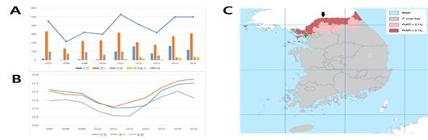
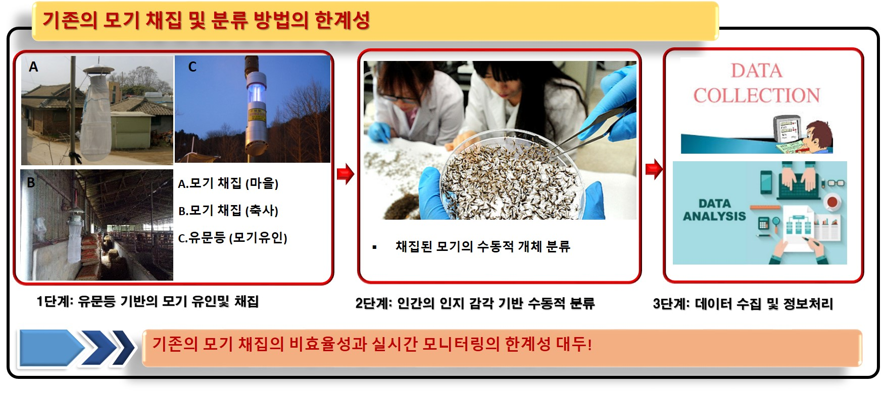
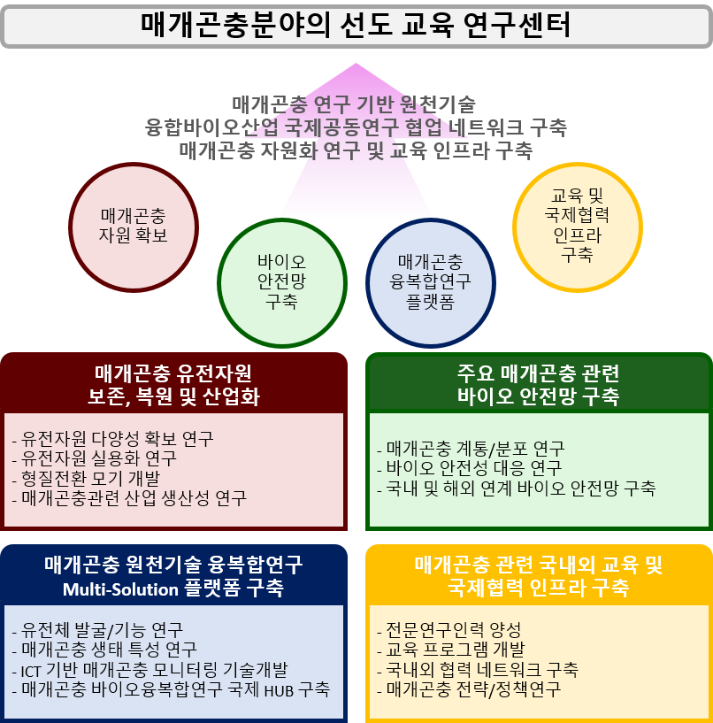
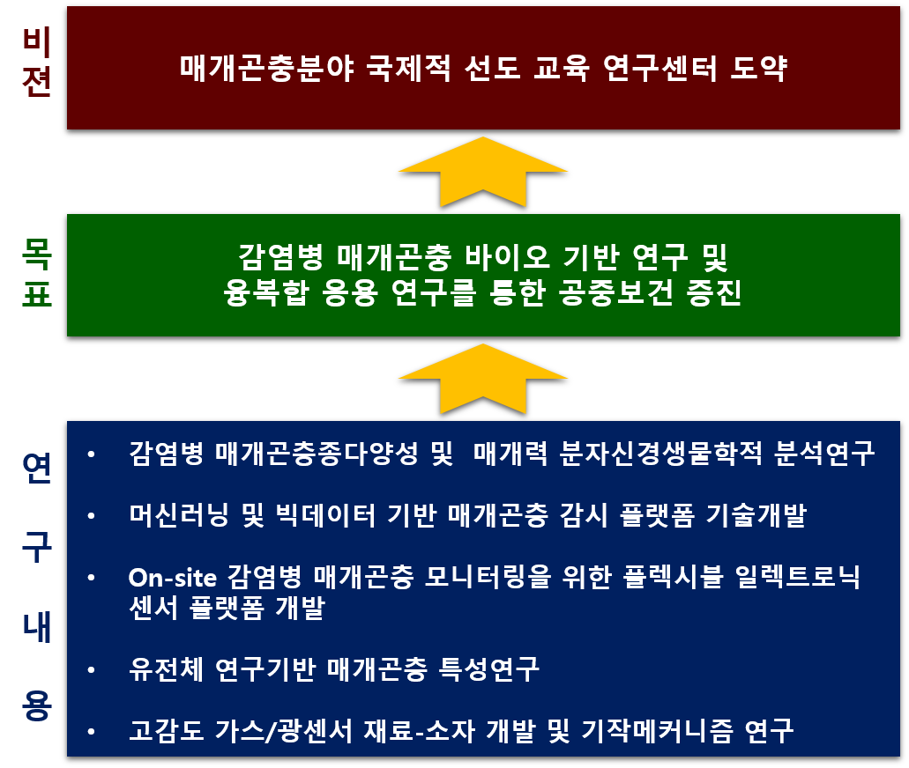
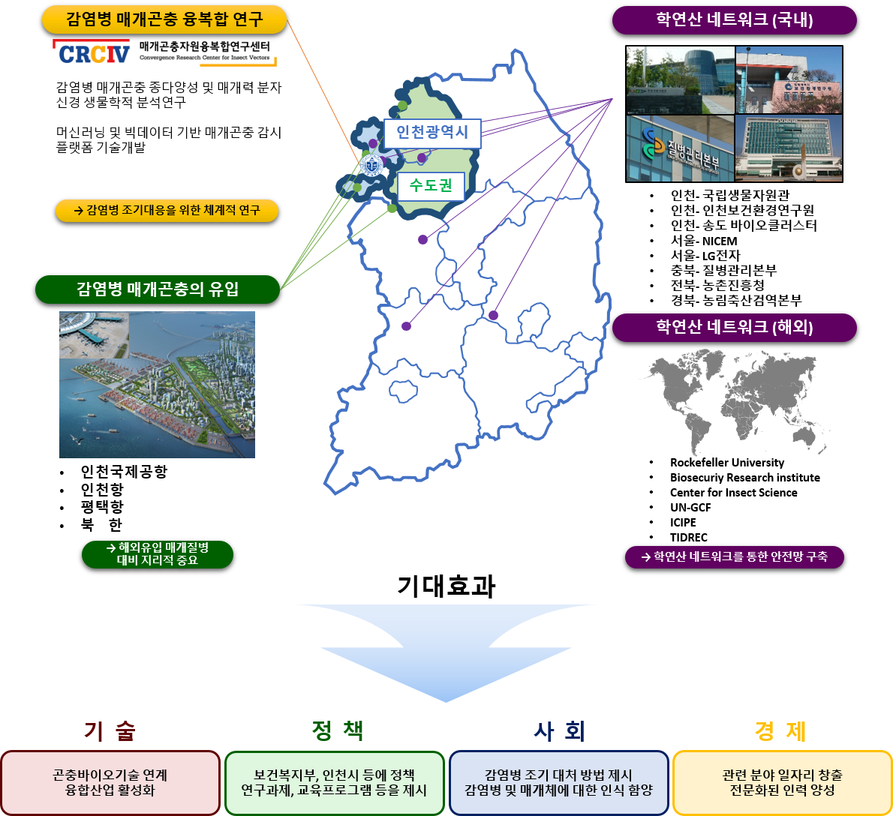

총장 인사말
안녕하십니까 인천대학교 총장 조동성입니다. 인천대학교는 바이오중심으로 특성화해서 세계 100대 대학이 되기 위해 노력하고 있습니다. 그 중 하나가 매개곤충에 관한 연구입니다. 뛰어난 교수님들이 열정적으로 함꼐 뭉쳐서 모기와 꿀벌에 대한 질병매개체에 대한 체계적인 관리시스템을 구축하는 연구를 하고자합니다.
앞으로 인천대학교는 매개곤충에 대한 연구를 가장 중요한 연구주제로 삼아 열심히 노력하고 대한민국을 대표하고 세계를 이끄는 그런 연구소가 되도록 하겠습니다. 감사합니다.
인천대학교 총장 조 동 성
센터장 인사말
매개곤충자원융복합센터는 2016년 10월 설립하여, 모기와 꿀벌로 알려진 매개곤충자원에 대한 기초연구를 기반으로 원천기술을 창출하여 인프라를 구축함과 동시에 산업화를 주도하고, 교육기관으로써 교육과 국제협력에 이바지함으로써 세계적 수준의 연구소로 거듭나고자 합니다.
매개곤충자원융복합센터는 매개곤충에 대한 생물학적 연구 뿐 아니라, ’융복합’적인 연구를 수행하기 위하여 각 분야의 우수한 연구진들로 구성되어 있습니다. 특히, 4차 산업 혁명에 발맞추어 기존의 NBIT (NT+BT+IT) 융합을 넘어 정보통신기술(ICT)과의 융합으로 매개 질병에 대한 보다 스마트한 범국가적인 안전망을 구축하고자 합니다.
저희 매개곤충자원융복합센터는 매개곤충 연구에 대한 신념과 매개 질병으로부터 안전한 세계를 향한 목표를 갖고 연구개발 및 융·복합적 산업 발전에 기여 할 것이며, 대한민국을 넘어 세계적인 연구기관이 되겠습니다.
보건복지부 질병관리본부 지정
권역별 기후변화 매개체 감시 거점센터 (수도 2권) 센터장
매개곤충자원융복합연구센터 센터장 권형욱
설립취지
1. 기후변화와 여러 요인으로 인한 매개질병의 창궐 (질병매개곤충의 outbreak 요인)
▶기후변화로 인한 각종 외래 질병매개체(모기, 개미, 진드기 등의 위생관련 해충) 유입
전 세계적으로 기온이 지속적으로 증가하고 있으며, 1930년대와 2015년을 비교를 해도 평균 기온이 최소 2℃, 최대 8℃ 이상까지 상승함
기온이 올라갈수록 모기의 활동기간이 변화하며, 또한 평균 활동기간이 증가함, 따라서 기온변화에 따른 모기이동에 대한 역학조사가 필요함

2. 국내 말라리아 및 매개질병 환자 분포 (인천 및 수도권북부: 본 연구소의 매개체감시 지역: 수도2권
따라서 인천을 포함하는 수도권 지역에서의 질병매개 모기의 모니터링 및 조기경보시스템 도입이 요구됨
기존 모니터링 방식은 현장에서 모기를 채취, 개별적 선별 (manual 방식) 분류 하는 방식을 취함.
- 실시간 모니터링이 불가능하며, 인적 비용적 손실 ㅇ 뇌염, 뎅기열, 쯔쯔가무시병 등 법정 전염병이 매개곤충의 유입 및 대발생으로 증가 추세에 있음
3. 융복합 질병매개곤충 연구의 경제적·산업적 가치 및 대학연구소 집중연구의 필요성
▶질병매개 모기 종의 안정적이고 효율적인 모니터링 기술 개발의 필요성 증대되고 있음
기존 방식은 현장에서 모기를 채취, 개별적 선별 (manual 방식) 분류 하는 방식을 취함: 실시간 모니터링이 불가능하며, 물적, 인적 비용적 손실은 물론, 실시간 모니터링이 불가함 (아래그림)
해외 선진국에서는 기후변화에 대응하여 매개곤충에 대한 집중적인 연구투자가 이루어지고 있으나(빌게이츠재단, 미보건성, CDC, GCF, WHO 등 세계, 정부, 민간기구 등), 우리나라는 고급인력과 연구를 해야 할 대학에서 이런 연구 인프라가 없는 상황임. 이것의 주요원인은 우리나라의 매개곤충을 연구할 facility가 부족함 (ACL2+이상의 곤충밀패연구시설이 필요함)
이런 이유로 유전체 연구를 통한 계통확립, 무균상태 대량사육기술개발, 밀패시설 (증빙 Ⅴ-1, 절지동물사육시설 기준 참조: ACL1~4단계 시설 중 ACL2+정도의 시설이 반드시 필요함
4. IoT연구의 도입 배경 및 연구가설의 도출 근거
IoT망에 놓인 다중의 센서들로부터 수집한 매개곤충의 특징을 전산화 할 수 있으면 반영구적 보관뿐 아니라 과학적 분석과 판단이 가능해 짐.
매개곤충의 특징 데이터를, 보건 및 의료행정기관은 물론 국민에 IoT를 목표로하는 LoRa/WiFi 통신망을 통해 전달할 수 있어 대비와 피해확산 방지에 효과적으로 대처할 수 있음

5. 매개곤충 기능유전자 연구 및 감각수용체를 이용한 바이오센서 연구
- 본 연구는 국내 주요 질병매개모기의 후각관련 수용체 유전자의 기능을 밝혀 바이오센서로 응용하고, 또한 이러한 것을 IoT기술과 접목하여, 더 효율적인 모기방제를 위한 중요한 연구과제임
6. 매개곤충 유전체 DB구축과 IoT융합연구의 연계성 및 필요성
유전체 DB는 IoT망 콘텐츠와 활용의 가치를 높이고, 보건과 질병관리에 도움이 됨.
매개곤충의 이동경로와 상황을 IoT망에 넣어 실시간 추적이 가능하게 함.
7. 건강한 삶을 위한 질병매개곤충 자동인식 및 안전망 구축의 필요성 및 중요성
- 1999년 미국 뉴욕에서 웨스트나일바이러스가 처음 발견된 후 수많은 사상자가 발생했고, 순식간에 미국 전역으로 퍼져나간 케이스가 있으며, 이러한 것은 현재 미국 질병통제센터(CDC)에서 매년 보고하고 있음(https://www.cdc.gov/mmwr/preview/mmwrhtml/mm4838a1.htm).
8. 연구의 차별성 및 국립 인천대학교 대학연구소로서의 강점
- 매개곤충의 연구분야 및 현재 국내외 곤충 매개질병의 빈번한 발생에도 불구하고 매개곤충을 자원화하고 인프라를 구축하여 체계적으로 연구 및 새로운 융합기술을 개발하는 국내 유일의 융합 연구팀임

Vision


센터 파급효과
